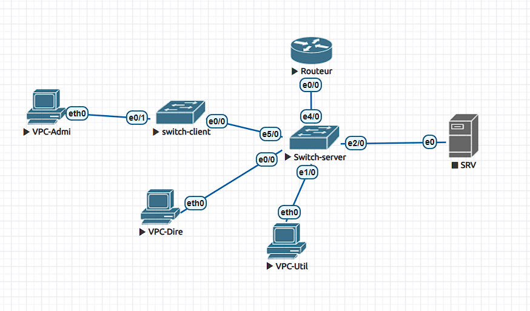
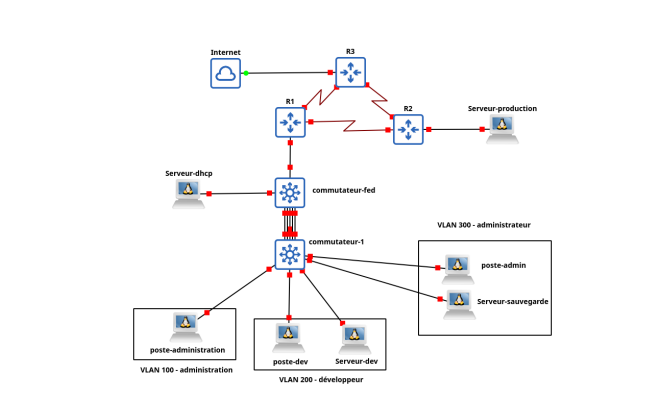
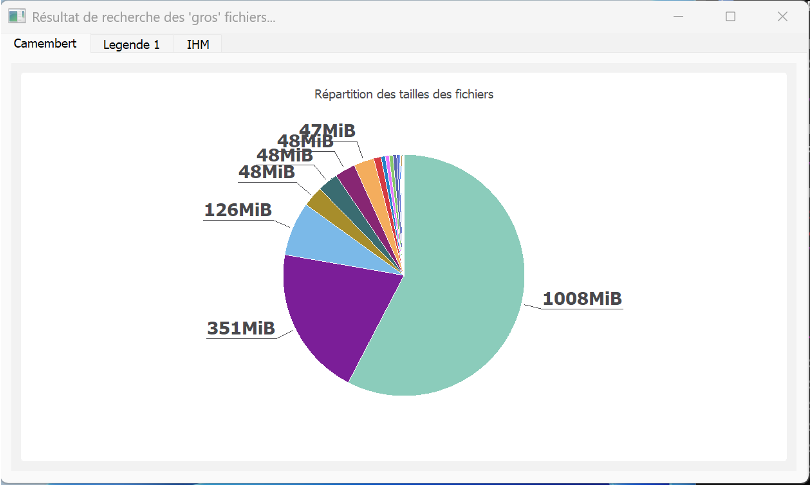
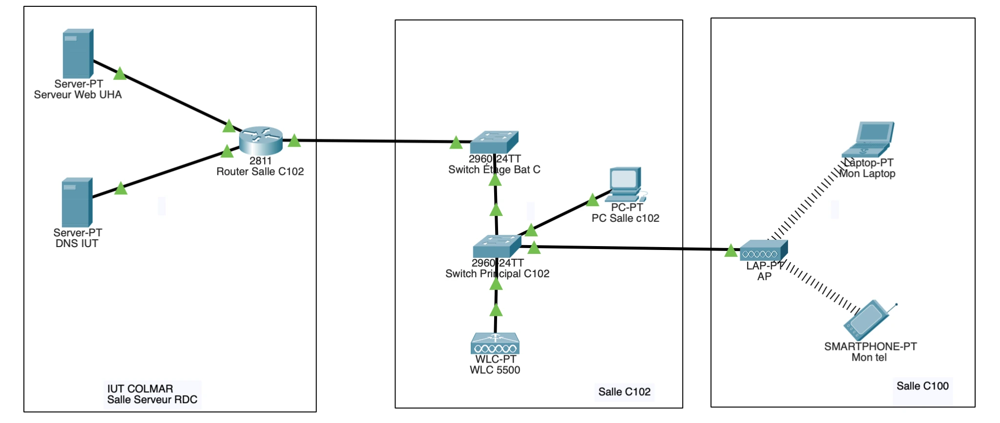

Étudiant · BUT Réseaux & Télécommunications
Je m'appelle Akram Fisichella. Je développe mes compétences en administration réseau, systèmes Linux, télécommunications et programmation. Ce portfolio présente mon parcours, mes SAE, mes preuves de travail et surtout ma progression en BUT Réseaux & Télécommunications à l’IUT de Colmar.
Mon identité professionnelle
Après mon baccalauréat général, j’ai choisi le BUT Réseaux et Télécommunications parce que je voulais comprendre concrètement comment les équipements, les systèmes et les applications communiquent entre eux. Ce domaine me plaît car il mélange la logique, la pratique, le diagnostic et l’évolution constante des technologies.
Mon objectif est de progresser vers les métiers de l’administration réseau, de l’infrastructure et de la cybersécurité. Je suis encore en apprentissage, mais je cherche à développer une méthode professionnelle : préparer un plan, configurer, tester, documenter, puis expliquer ce que j’ai fait.
Mes expériences professionnelles en commerce, hôtellerie et service client m’ont aussi apporté des qualités utiles en R&T : autonomie, ponctualité, adaptation, travail en équipe et capacité à expliquer clairement une situation à une personne non spécialiste.
// Langues
// Qualités
// Domaines d’intérêt
// Formation
Ce que je sais faire et comment je le prouve
Les compétences sont organisées selon le référentiel du BUT R&T : administrer les réseaux, connecter les entreprises et créer des outils informatiques.
Mes situations d’apprentissage
Chaque fiche présente le contexte, les outils, les compétences du référentiel, les difficultés et le retour d’expérience. Clique sur une fiche pour afficher le détail.
Travail réalisé dans le cadre des apprentissages de réseau local en BUT R&T. L’objectif était de construire une infrastructure organisée, avec plusieurs réseaux logiques, puis de vérifier que les postes communiquent correctement selon le plan prévu.
Concevoir un plan d’adressage, créer les VLAN, configurer les ports access/trunk, mettre en place le routage inter-VLAN et valider le fonctionnement grâce aux commandes de diagnostic.
- Cisco Packet Tracer / EVE-NG
- Switchs et routeurs Cisco
- Adressage IPv4 et sous-réseaux
- VLAN / trunk 802.1Q
- DHCP et relais DHCP
- Commandes show, ping, traceroute
- AC11.03 — Configurer les fonctions de base du réseau local
- AC11.05 — Identifier les dysfonctionnements du réseau local
- CE1.03 — Utiliser une approche rigoureuse de résolution de panne
- AC11.06 — Expliquer la procédure mise en place
- Définition du plan d’adressage et des passerelles
- Création des VLAN et affectation des ports
- Configuration des trunks entre équipements
- Mise en place du routage inter-VLAN sur routeur ou switch L3
- Configuration DHCP / relais DHCP
- Tests de ping entre postes et passerelles, puis correction des erreurs
Les erreurs les plus formatrices ont été liées aux masques, aux passerelles et aux interfaces qui se chevauchent. Quand une adresse n’est pas dans le bon sous-réseau ou qu’un trunk est mal configuré, le réseau semble “ne rien faire”, alors que le problème est souvent une petite incohérence.
J’ai appris à repartir de la méthode : vérifier l’adresse IP du poste, la passerelle, le VLAN du port, le trunk, puis les interfaces du routeur. Les commandes comme show vlan brief, show ip interface brief et les tests de ping m’ont aidé à isoler les problèmes.
Ce projet m’a montré que la configuration réseau demande surtout de la rigueur. Une bonne documentation du plan IP évite beaucoup d’erreurs. J’ai aussi compris l’intérêt réel de la segmentation : séparer les usages tout en gardant une infrastructure administrable.
Je préparerais d’abord un tableau propre avec VLAN, réseau, passerelle, plage DHCP et ports associés. Ensuite seulement je passerais à la configuration, pour éviter les corrections de dernière minute.


In this project, I learned how to design and configure a segmented local network using VLANs, DHCP and inter-VLAN routing. It helped me understand that troubleshooting must be done step by step: IP address, gateway, VLAN, trunk links and connectivity tests.
Dans ce projet, une machine virtuelle Debian sert de base pour déployer des services réseau. Le but est de passer d’une machine installée à un serveur réellement exploitable et vérifiable depuis le réseau.
Installer et configurer des services essentiels : serveur web Apache2, service FTP, résolution DNS, synchronisation NTP, centralisation Syslog et règles de filtrage avec iptables.
- Debian / ligne de commande Linux
- VirtualBox
- Apache2
- FTP
- DNS
- Syslog
- NTP
- iptables
- AC11.04 — Maîtriser les rôles des systèmes d’exploitation
- AC11.06 — Installer un poste client / serveur et expliquer la procédure
- AC13.01 — Utiliser un système informatique et ses outils
- CE1.02 — Respecter les principes de sécurité informatique
- Configuration réseau de la VM Debian
- Installation des paquets nécessaires
- Validation d’Apache2 depuis un navigateur
- Configuration et test du FTP
- Vérification de la résolution DNS
- Validation Syslog / NTP
- Ajout de règles iptables et tests de connectivité
La difficulté principale est de comprendre où se trouve le problème quand un service ne répond pas : service arrêté, mauvaise IP, DNS non fonctionnel, port bloqué ou pare-feu trop restrictif.
J’ai appris à tester par étapes : vérifier l’état du service avec systemctl, contrôler l’adresse IP, tester localement, puis tester depuis une autre machine. Pour le pare-feu, je note les règles appliquées pour pouvoir revenir en arrière.
Ce projet m’a permis de relier la partie réseau à la partie système. Un serveur ne se limite pas à installer un paquet : il faut vérifier son écoute, son accès réseau, sa sécurité et sa documentation.
Je documenterais chaque service dans un tableau : rôle, port utilisé, fichier de configuration, commande de test et résultat attendu. Cela rendrait la maintenance plus simple.
This project helped me understand how a Debian server can provide real network services such as web, FTP, DNS, NTP and logging. I also learned that a working service must be checked from several angles: status, IP configuration, ports, firewall rules and client access.
Application web de gestion de notes pour des étudiants. Le sujet demandait de gérer plusieurs entités : étudiants, UE, ressources, enseignants, examens et notes, avec une base préparée et une interface permettant l’administration des données.
Créer une application web capable de gérer les entités du sujet, saisir ou importer des notes par CSV, générer un modèle CSV, produire un relevé de notes simple et conserver les données en base.
- Python / Django
- MariaDB
- HTML / CSS
- Templates Django
- CSV
- Migrations et seed
- Sauvegarde type mysqldump
- AC13.02 — Lire, exécuter, corriger et modifier un programme
- AC13.04 — Connaître l’architecture d’un site Web
- AC13.05 — Choisir les mécanismes de gestion de données
- AC13.06 — S’intégrer dans un environnement de développement
- Analyse du sujet et identification des entités
- Création des modèles Django et relations en base
- Migrations pour créer les tables
- Seed pour insérer des données de départ
- Mise en place des vues CRUD
- Import/export CSV avec le format
numero_etudiant;note;appreciation - Création d’un relevé de notes simple
- Préparation de la démo et de la présentation
Les points les plus délicats ont été les relations entre modèles, les migrations, le seed et la logique d’import CSV. Une petite erreur dans le nom d’un champ ou dans une clé étrangère peut bloquer toute la chaîne.
J’ai séparé le problème en étapes : d’abord les modèles, ensuite les migrations, puis les vues, puis les formulaires et enfin l’import CSV. Pour comprendre le code, je me suis entraîné à expliquer chaque fonction, notamment la génération du template CSV.
Cette SAE m’a fait comprendre la différence entre écrire du code et construire une application maintenable. J’ai découvert l’importance de l’organisation du projet, des données de test et de la séparation entre modèle, vue et template.
Je commencerais plus tôt par un schéma de base de données propre, puis je préparerais un jeu de données minimal pour tester chaque fonctionnalité avant d’ajouter l’interface.
During this web project, I worked on a Django application used to manage students, exams and grades. I improved my understanding of databases, CRUD features, CSV import/export and deployment with Nginx and Gunicorn on a Debian virtual machine.
Projet de développement d’un outil capable d’analyser un dossier, repérer les fichiers volumineux, présenter les résultats et préparer une suppression contrôlée.
Créer un programme modulaire : sélection de répertoire, analyse des fichiers, génération d’un fichier JSON, affichage graphique sous forme de camembert et création d’un script PowerShell de suppression avec double confirmation.
- Python
- PyQt5
- JSON
- PowerShell
- Parcours de fichiers avec rglob
- Interface graphique / camembert
- AC13.02 — Lire, exécuter, corriger et modifier un programme
- AC13.03 — Traduire un algorithme dans un langage
- AC13.06 — S’intégrer dans un environnement de développement
- CE3.02 — Documenter le travail réalisé
- Choix du répertoire de départ
- Parcours récursif des fichiers
- Tri décroissant par taille et limitation du nombre d’éléments
- Export des résultats en JSON
- Affichage graphique avec légendes
- Génération d’un script PowerShell avec confirmation
La difficulté était de garder un code lisible malgré plusieurs modules. Il fallait aussi éviter qu’un outil de suppression soit dangereux : la sécurité de l’utilisateur devait être prise en compte.
J’ai structuré le projet en fichiers séparés et j’ai utilisé un fichier JSON comme format d’échange entre l’analyse et l’affichage. La suppression n’est pas directe : elle passe par un script séparé avec confirmation explicite.
Ce projet m’a montré que programmer, ce n’est pas seulement obtenir un résultat : il faut penser à l’utilisateur, à la lisibilité du code et aux risques d’une action irréversible.
Je ferais davantage de tests avec des dossiers factices avant de tester sur de vrais fichiers, et j’ajouterais un journal des suppressions pour garder une trace.

This Python project allowed me to create a tool that scans a directory, detects large files and displays the results in a graphical interface. I learned how to split a program into clear modules and how to generate useful data such as JSON files and deletion scripts.
Étude réalisée sur le réseau Wi‑Fi de l’IUT, notamment dans le bâtiment C et la bibliothèque. Le travail consistait à mesurer la qualité de réception et à analyser la couverture selon les points d’accès.
Cartographier la couverture Wi‑Fi, interpréter les niveaux RSSI, comparer les bandes 2,4 GHz et 5 GHz, repérer les zones moins bien couvertes et comprendre l’impact du chevauchement de canaux.
- Acrylic WiFi
- Heatmaps
- Mesures RSSI
- Analyse 2,4 GHz / 5 GHz
- Channel coverage / overlap
- AC12.01 — Mesurer, analyser et commenter les signaux
- AC12.03 — Déployer des supports de transmission
- CE2.02 — Faire preuve d’une démarche scientifique
- CE2.03 — Choisir des solutions adaptées
- Préparation du plan de mesure
- Réalisation du parcours de capture
- Génération de heatmaps globales et par point d’accès
- Analyse des zones fortes/faibles
- Interprétation de la qualité Wi‑Fi et du chevauchement de canaux
L’interprétation des couleurs et des niveaux RSSI peut prêter à confusion si l’on ne lit pas correctement la légende. Il faut aussi distinguer puissance de réception et qualité réelle de connexion.
J’ai appris à relier une mesure à un contexte : distance à la borne, obstacles, bande utilisée, densité de points d’accès et recouvrement de canaux. J’ai comparé les cartes au lieu de conclure sur une seule mesure.
Cette SAE m’a aidé à comprendre que le Wi‑Fi n’est pas simplement “ça capte ou ça ne capte pas”. C’est une technologie qui se mesure, s’analyse et se planifie.
Je préparerais un protocole de mesure plus strict avec des points fixes et des captures prises dans les mêmes conditions pour rendre la comparaison plus fiable.

In this Wi-Fi project, I studied wireless coverage using measurements, heatmaps and Packet Tracer simulation. I learned that 2.4 GHz usually offers better range, while 5 GHz can provide better performance over shorter distances and is more affected by obstacles.
Projet autour d’un ESP32 connecté à un module audio VS1053. L’objectif était de réaliser une radio Internet pilotable et configurable sur le réseau.
Connecter l’ESP32 au Wi‑Fi, lire des flux audio en ligne, gérer plusieurs stations, contrôler le volume et recevoir des commandes via MQTT.
- ESP32
- VS1053
- WiFiManager
- PubSubClient / MQTT
- Flux MP3 Icecast
- Arduino IDE
- AC12.04 — Connecter les systèmes de ToIP / communication
- AC13.02 — Lire et modifier un programme
- AC13.03 — Traduire un algorithme
- CE3.05 — Intégrer les problématiques de sécurité
- Câblage ESP32 / VS1053
- Configuration Wi‑Fi avec WiFiManager
- Déclaration des stations radio
- Connexion au broker MQTT
- Réception des commandes
- Test du volume et des changements de chaîne
Quand les commandes MQTT ne produisent aucun effet, le problème peut venir du broker, du topic, de la connexion Wi‑Fi, du callback ou même de la logique du programme.
J’ai appris à isoler le problème : vérifier la connexion Wi‑Fi, tester le broker, contrôler les topics, puis ajouter des messages de debug dans le moniteur série.
Ce projet m’a fait comprendre le lien entre réseau, programmation embarquée et services applicatifs. Un objet connecté dépend autant du code que de la connectivité.
Je commencerais par tester MQTT seul avec un programme minimal avant d’ajouter la partie audio, pour valider chaque brique séparément.
This ESP32 project combined embedded programming, Wi-Fi connection and MQTT communication. It showed me that an IoT device depends on several layers at the same time: hardware wiring, network connectivity, software logic and message exchange with the broker.
Mise en place et validation de communications téléphoniques IP entre postes logiciels et téléphone matériel. Le travail inclut l’inscription de comptes SIP et les tests d’appels via URI.
Configurer les comptes SIP, valider la signalisation d’appel, tester l’émission/réception entre PC et téléphone matériel, puis expliquer le rôle des éléments de la chaîne ToIP.
- Linphone
- Téléphone Yealink
- Comptes SIP
- URI SIP
- Wireshark pour observer la signalisation
- AC12.04 — Connecter les systèmes de ToIP
- AC12.05 — Communiquer avec un tiers et adapter son discours
- CE2.01 — Communiquer avec les acteurs impliqués
- CE2.03 — Choisir les solutions adaptées
- Création / utilisation des comptes SIP
- Configuration des clients Linphone
- Paramétrage du téléphone Yealink
- Test d’appels PC ↔ téléphone matériel
- Validation de la sonnerie, numérotation et signalisation
- Explication émission/réception d’un message ou appel IP
La difficulté venait surtout de la différence entre “appel sortant affiché” et “appel réellement reçu”. Le problème peut être un compte mal inscrit, une URI incorrecte ou une mauvaise destination.
J’ai repris les tests dans les deux sens et vérifié chaque compte séparément. J’ai aussi compris qu’un appel IP se valide en regardant la signalisation, pas seulement l’interface utilisateur.
Ce projet m’a permis de mieux comprendre la ToIP : derrière un appel simple, il y a des comptes, des URI, des serveurs, de la signalisation et des flux médias.
Je ferais un tableau de correspondance compte → appareil → adresse → statut d’inscription pour éviter les confusions pendant les tests.
This VoIP project helped me understand how SIP accounts, softphones and hardware phones communicate over the network. I learned that validating a call is not only about hearing a ringtone, but also about checking registration, SIP URIs and signalling.
Suivi de mon apprentissage
Le journal de bord sert à garder une trace des étapes importantes, pas seulement des résultats. Il montre comment je progresse et comment je corrige mes erreurs.
Préparation d’un plan d’adressage, configuration de VLAN, ports access/trunk, sous-interfaces et tests de ping.
Erreurs de masque, passerelle ou interface qui empêchaient la communication entre réseaux.
Relecture du plan IP, commandes show, tests étape par étape depuis le poste jusqu’au routeur.
Topologie, captures de configuration, résultats de ping, schéma d’adressage.
J’ai compris qu’un réseau fonctionne si toutes les petites décisions sont cohérentes : VLAN, port, passerelle, masque et route. La méthode est plus importante que la mémorisation seule.
Installation et validation de services : Apache2, FTP, DNS, Syslog, NTP et règles iptables.
Identifier si un problème venait du service, du réseau, du DNS ou du pare‑feu.
Tester localement puis à distance, contrôler systemctl, vérifier les ports et noter chaque commande utilisée.
Captures terminal, pages web, tests de résolution, règles de filtrage.
Cette partie m’a montré que Linux est au cœur de beaucoup de services réseau. Je dois continuer à pratiquer les commandes pour gagner en rapidité.
Création des modèles, migrations, seed, pages CRUD, import/export CSV et relevé de notes.
Comprendre les relations entre entités et gérer les données de test correctement.
Découper le travail : modèles d’abord, migrations ensuite, puis vues, templates et tests.
Captures interface, schéma BDD, extrait de code Django, fichier CSV modèle.
J’ai progressé dans ma capacité à expliquer mon propre code. La partie migrations/seed m’a aidé à comprendre le lien entre le code Django et la base de données réelle.
Configuration Wi‑Fi, définition des stations radio, tests MQTT et commandes de volume / chaîne.
Les commandes MQTT ne sont pas toujours reçues si le topic, le broker ou le callback est mal configuré.
Tester chaque brique séparément et ajouter des affichages de debug dans le moniteur série.
Photo du montage, code ESP32, capture MQTT, vidéo de fonctionnement.
J’ai compris qu’un objet connecté n’est pas seulement de l’électronique : c’est aussi du réseau, des services et du débogage méthodique.
Mes traces d’apprentissage
Cette section rassemble les preuves principales de mes SAE. Elles montrent des résultats concrets : topologies, captures d’interface, rapports et procédures.
Mon itinéraire
Ce que le BUT R&T m’apprend
Ce que j’ai appris jusqu’ici
J’ai compris que les réseaux ne se limitent pas à brancher des équipements. Il faut prévoir un plan, respecter une logique d’adressage, configurer correctement les équipements, tester et documenter. J’ai aussi découvert l’importance de Linux, car beaucoup de services réseau reposent sur des serveurs administrés en ligne de commande.
Compétences renforcées
J’ai renforcé mes bases en VLAN, DHCP, Cisco, Linux Debian, virtualisation, analyse Wi‑Fi, ToIP et programmation. Je progresse aussi dans l’explication de mon travail, ce qui est essentiel pour une soutenance ou un futur poste en informatique.
Difficultés rencontrées
Mes principales difficultés ont été la rigueur dans l’adressage IP, la compréhension des erreurs réseau invisibles au premier regard, la gestion des migrations/seed en Django et le débogage des communications MQTT sur ESP32.
Comment j’ai progressé
Je progresse en reprenant les problèmes étape par étape : je vérifie d’abord la configuration la plus simple, puis je remonte vers les éléments plus complexes. Je m’appuie aussi sur mes captures, mes notes, mes commandes et mes schémas pour comprendre au lieu de seulement retenir.
Objectifs pour la suite
À court terme, je veux consolider mes bases de BUT1 et être capable d’expliquer clairement mes projets. À moyen terme, je veux approfondir l’administration réseau, Linux et la cybersécurité. À long terme, je souhaite m’orienter vers l’infrastructure réseau, la cybersécurité ou l’administration systèmes et réseaux.
Me contacter
Akram Fisichella — Étudiant en BUT Réseaux & Télécommunications à l’IUT de Colmar.
Je suis intéressé par l’administration réseau, les systèmes Linux, l’infrastructure et la cybersécurité. Ce portfolio présente mes projets, mes preuves et ma progression.